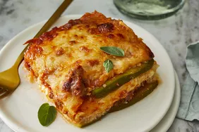

Lasagna

Descriptions
Lasagna is a type of long, flat Italian pasta, possibly one of the oldest types of pasta.
Ingrendients
- cooking spray
- 1 tablespoon olive oil
- 1 pound ground beef
- 2 teaspoons salt, divided
- 1 teaspoons dried oregano
Steps
- Preheat the oven to 375 degrees F (190 degrees C). Grease an 8-inch baking dish with cooking spray.
- Combine ricotta cheese, egg, 1 teaspoon salt, and nutmeg in a bowl; mix well. Set aside.
- Bake in the preheated oven for 30 minutes. Remove aluminum foil and bake until top is golden, about 15 minutes more.